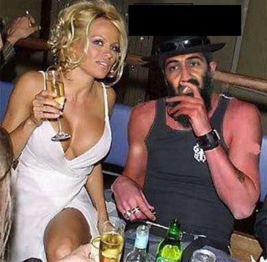
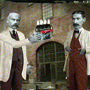

Note: Upcumming runs are assigned in more or less random order. If you want to switch weeks, or would like to be added to the hareline, or offer the Trailmaster sexual favors, contact Basket Boom Boom.
Last Updated:
Aug 25, 2013
If you're looking to do something completely different, a few of us meet on Wednesday at the Rock Gym in Lincoln and may climb over the weekend nearby or in New Hampshire.
| Date: | Time: | Run | Hare: | Directions: | |||||||||||||||||||||||||||||||||||||||||||||||||||||||||||
| Mon. Sept 9 | 6:30 PM | 1432 |
Basket
|
|
|||||||||||||||||||||||||||||||||||||||||||||||||||||||||||
| Mon. Sept 16 | 6:30 PM | 1433 | Hairy Krishna Luxury Box 
|
Luxury Box shows Hairy the BushHer Song of the Week: "Nancy Brown." |
|||||||||||||||||||||||||||||||||||||||||||||||||||||||||||
| Mon Sept 23 | 6:30 PM | 1434 |
Oozing  |
Oozingd'Erections will be forthcuming in OOzing time. Check the Message Board. |
|||||||||||||||||||||||||||||||||||||||||||||||||||||||||||
| Mon Sept 30 | 6:30 PM | 1435 |
Crotch Tiger and Pussy Galore |
the Ladies from DOB HASH AGAIN Ladies? |
|||||||||||||||||||||||||||||||||||||||||||||||||||||||||||
| Mon Oct 7 | 6:30 PM | 1436 |
Ass Quack and
Crabby Shag |
|
|||||||||||||||||||||||||||||||||||||||||||||||||||||||||||
| Mon. Oct 14 | 6:30 PM | 1437 |
Retard
 |
Retard wants another go at RIH3 | |||||||||||||||||||||||||||||||||||||||||||||||||||||||||||
| Mon. Oct 21 | 6:30 PM | 1438 |
WeeBalls
|
|
|||||||||||||||||||||||||||||||||||||||||||||||||||||||||||
| Mon Oct 28 | Mon 6:30 | 1438 |
Dr WHO
|
WHO |
|||||||||||||||||||||||||||||||||||||||||||||||||||||||||||
| Mon. Nov 4 | 6:30 PM | 1439 |
Rusty  |
|
|||||||||||||||||||||||||||||||||||||||||||||||||||||||||||
| HARELINE DOGHOUSE: | ||
|
Bondo Jovi |
Bondo has decided to put himself in the Dog House. All this running for nuttin' is takin' time away from beer makin'. At his age he doesn't have the liberty of wasting too much time....so many beer, so little time. | |
|
Justin Myass |
After a short hiatus, JIMA is back in the doghouse. He is lost in his books, and seems like he doesn't have time to do much else these days. He's got to learn one thing...Life is too short! | |
|
Thats-a-Mouthful |
So Mouthful thinks flying planes in warmer climates is better than running in shiggy in the cold dark New England evenings whilst enjoying good beer. Such a shame... he was just getting good at setting sh*tty trails. | |
|
Dry Foot Fairy |
Apparently, Dry Foot had to move to New York City to get laid. | |
|
Trail Hoover (SESYB) |
OK Boys and Girls.... time to dust off that porn collection. | |
|
Great at Giving Head |
Apparently, G@GH found better opportunities outside Rhode Island. Too bad he'll never find better beer. | |
|
Async |
Until he shows himself again, he's back in the doghouse. | |
|
Tinker |
Tinker is stuck in a snow drift in Pig Iron, NH and is trying to get a snow cat to catch his plane to Southeast Asia hashing with the Thai's. Good Luck and God bless that lucky Wanker! | |
|
Cum Under PSHS |
She may be gone, but our ears will still be ringing for years to come. Thus, did she really leave? | |
|
Dick Doc |
Double D decided to leave us for warmer climates, rumored to be somewhere in Arizona. Those Canadians could never handle the New Engand winters and good beer. | |
|
Evil Bitch Ripta
|
EB has once again succumbed to the siren call of lite beer and bowling. | |
|
Swallows My Pride
|
The Good Doctor has gone Bad. | |
|
Raging Queen of Beers
|
Raging is AWOL somewhere in the Land of Teddy Kennedy and John Kerry | |
|
Birdbrain
|
Birdbrain is currently whining with some lame exuse about working on a doctoral thesis. When will you people learn? Repeat after me. The Hash Is My Life! | |
|
EverReady
|
Our Hash Soccer Mom was suffering from terminal responsibility and respectability. Ever since she also became afflicted with the M-word, she's become a lost cause. Someone has to darn KNO's socks, right? |
|
|
Short Peck
|
Apparently, Mr. Peck has determined he has a better chance of getting laid in the Granite State. (Yes, even Jake turned him down). |
|
|
Snot
|
Snot's performance as a Rhode Island hare was so abysmal that we sent him packing back to the UK. He'll be allowed back on the hareline when he either (1) recruits Elizabeth Hurley to the Rhode Island Hash or (2) provides sexual favors to Jake. |
|